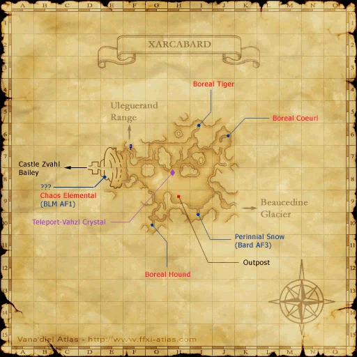

Before you begin
Be allied with Bastok, have Rank 5, and finish the preceding required story steps. Raise Rank Points if the mission is not offered.
Walkthrough
- Accept the mission and enter the President’s Office for Karst’s briefing.
- Travel through Xarcabard and Castle Zvahl to the Throne Room.
- Enter the Shadow Lord battle. Switch between physical and magical damage as phase-one immunities change.
- Defeat the second phase while keeping the party healed through area attacks.
- Return to President Karst for the promotion.
Important notes
- Bring both physical and magical damage options.
Locations and references
| Place / NPC | Location | Reference |
|---|---|---|
| Battlefield | Throne Room, through Castle Zvahl Keep | Location reference |
Completion and reward
Rank 6; 20,000 gil
Area maps
Open a zone below, then select a map to enlarge it. Match the named floors and grid coordinates in the steps; these are reference area maps, not a live position tracker.
Xarcabard



Castle Zvahl Keep


References
HorizonXI Wiki: Bastok 5-2 · LandSandBoat mission definition
The route summary covers the original story. Other servers’ extra rewards, level-cap settings and Trust rules are not promises of Zenith behavior. Confirm battlefield entry conditions in game.
Additional level-75 reference
|
Recommended: Level 70+ and ability to do physical and magical damage, or level 55+ party.
Walkthrough
- This mission requires a certain level of Rank Bar. Complete some repeatable missions or trade 15-18 crystals (after completing Darkness Rising) to a Conquest Overseer.
- After accepting this mission from any gate guard, go speak to the President for a cutscene.
- Form a full level 50+ party and travel to Xarcabard and on to Castle Zvahl Baileys .
- Upon zoning into Castle Zvahl Baileys , go straight until you encounter the first intersection and make a left. Go down a small flight of stairs and then turn right and follow the left wall and you will enter the Orc section of the castle.
- Go through the area to the west again and eventually you will zone into Castle Zvahl Keep.
- Once you enter Castle Zvahl Keep, you will have to open several gates, very often in front of mobs that detect on sight.
- You will encounter a series of teleport devices. These devices will cancel the Invisible effect after they are used. Once you use the last device, run to the west exit of the map where you will find a zoneline to the Throne Room.
- When ready, gather in front of the door. When you enter, a cutscene will happen and the fight begins. Cast the prefight buffs before getting closer.
- This fight is 6-person level capped at level 75.
- The Shadow Lord has 2 forms. In the first form he will spam the Invincible move once he is at 50% health. Invincible does not protect him from magic.
- Once Shadow Lord starts spamming Invincible, mages need to nuke repeatedly and rest when melee are able to deal damage again.
- After the first form is defeated, a cutscene will appear. The second form will show up after the cutscene and does not wait for you to rest.
- This form of Shadow Lord will do nothing but a AOE attack but only has 4000 HP and should go down quickly.
- Melees should use their 2 hour abilities and Icarus Wing if possible to have TP for their best weaponskill. Mages should cast their Curaga spells.
- After this form is defeated, another cutscene occurs. Once the cutscene ends, you will be transported back to the entrance of Castle Zvahl Baileys. Here you will receive the Key Item Shadow Fragment.
- The Shadow Lord gives experience for a Level 60 mob.
- Report back to the President for another cutscene.
Game Description
- Mission Orders
- You must go to Castle Zvahl in Xarcabard. The President himself will brief you in his office.
Adapted from Eden Wiki: Xarcabard, Land of Truths · Contributors and history · CC BY-SA 4.0. Revision 5387. Layout, links and optional background text adapted for Zenith.